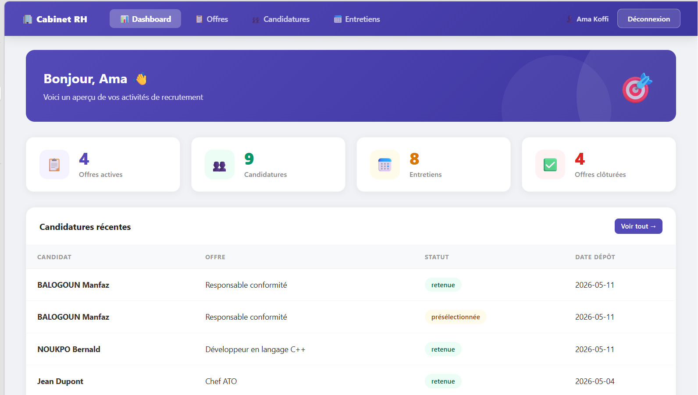
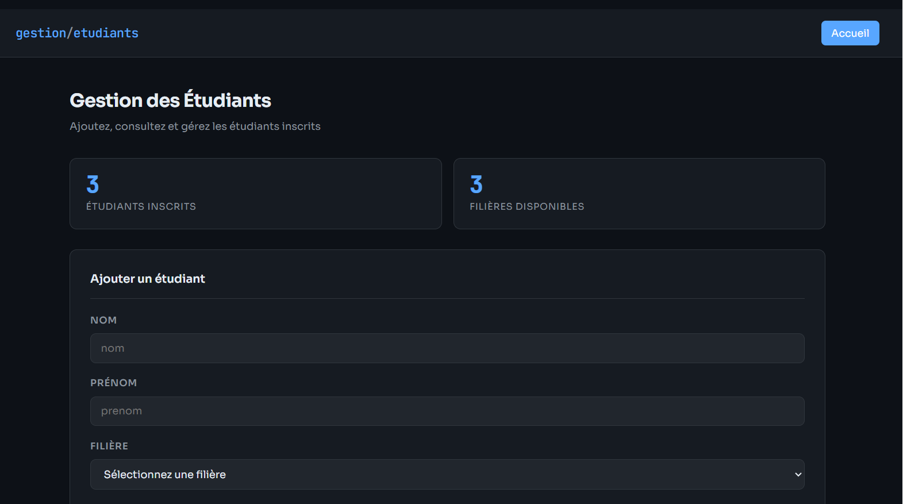
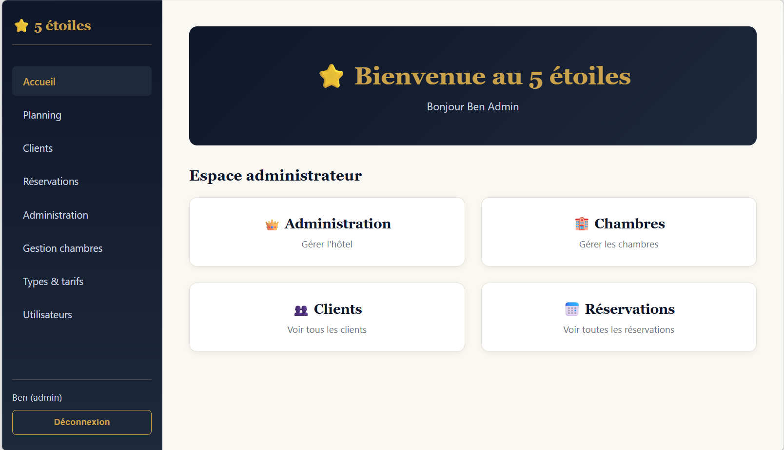
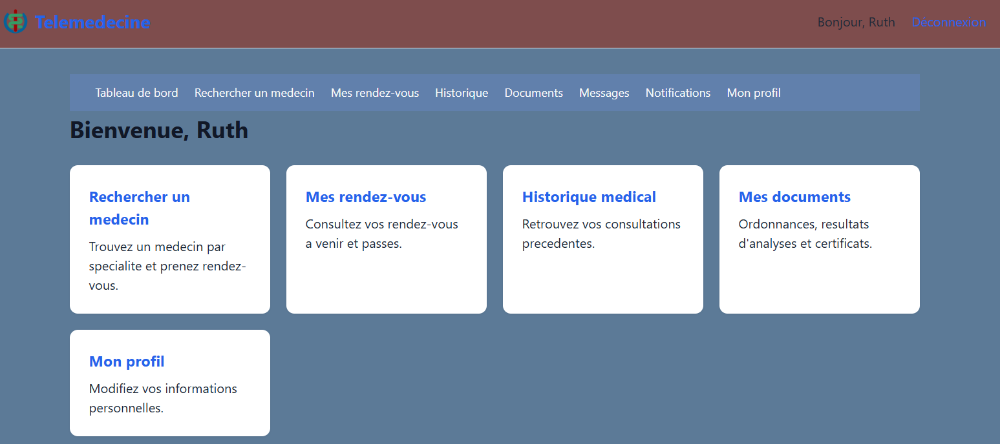
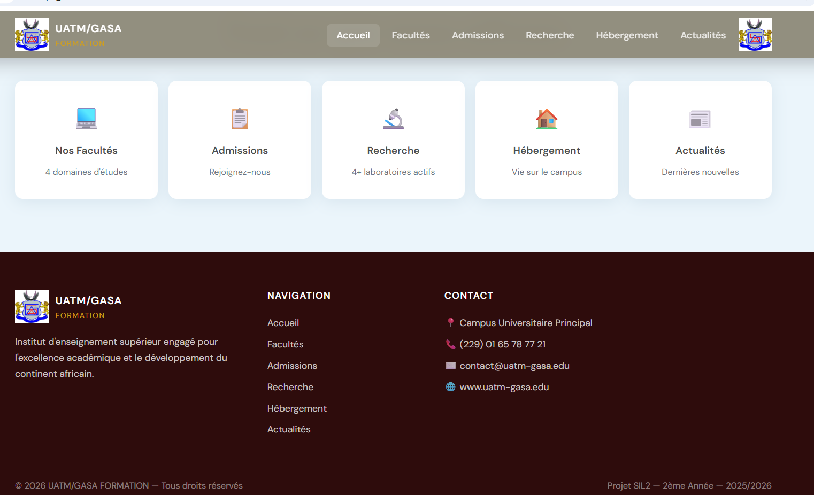
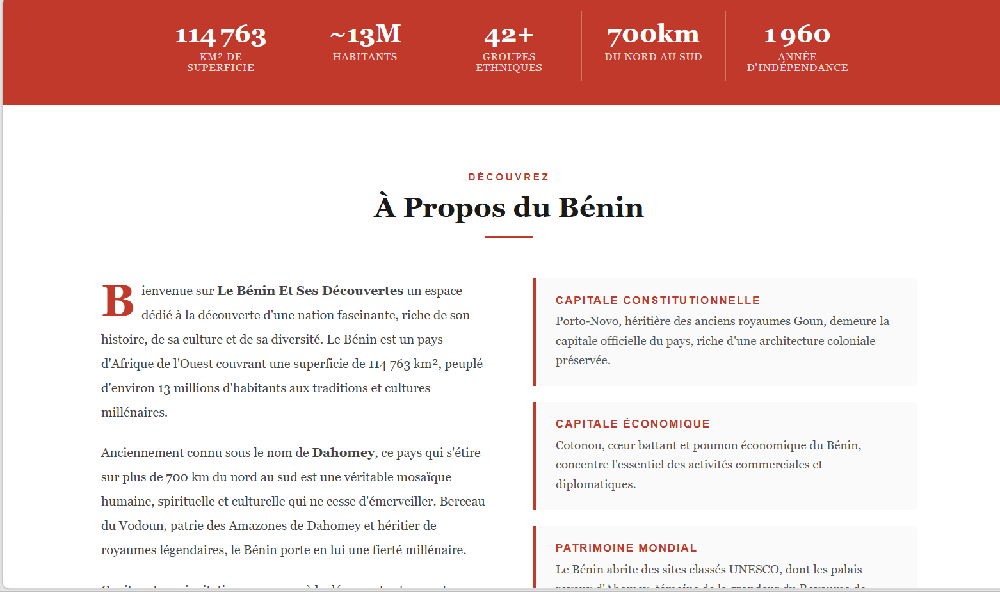

Projects
Selected projects
A selection of recent projects that reflect my expertise.
Base de données
Base de données
Gestion de bibliothèque
Applications desktop
Application de Gestion de Consultations et de Paiements

Application desktop de gestion médicale développée en Java (Swing), avec une modélisation conçue selon la méthodologie UML et une base de données PostgreSQL : authentification sécurisée par rôles (Administrateur, Médecin, Secrétaire, Caissier, Patient), gestion des consultations, rendez-vous, facturation et paiements, avec permissions différenciées selon le profil utilisateur.
Application de Gestion des Notes

Gestion des Notes Étudiants est une application de bureau développée en Java, avec une modélisation conçue selon la méthodologie UML, s'appuyant sur une interface graphique Swing et une architecture orientée objet. Elle couvre la gestion des étudiants, des filières et des matières, la saisie des notes, la génération de relevés classés par mérite ainsi que l'édition de bulletins individuels, avec un accès sécurisé par mot de passe administrateur.
Application de Gestion des Notes des Étudiants

Gestion des Notes des Étudiants est une application de bureau avec interface graphique développée en Visual Basic. Elle permet d'enregistrer les notes des étudiants d'une classe (nom, note dans chaque matière avec la mention validé ou non validé, moyenne générale et rang), selon les coefficients suivants : Tronc commun (3), Spécialité (4) et EPP (3). Elle affiche le résultat final par ordre de mérite en fonction de la moyenne générale et permet d'éditer le bulletin de chaque étudiant.
Applications web
Application de Gestion de Recrutement pour les Entreprises par un Cabinet

Gestion de Recrutement est une application Web développée en PHP, HTML, CSS et JavaScript, avec une modélisation conçue selon la méthodologie UML. Elle offre un tableau de bord centralisant le suivi des offres d'emploi, des candidatures et des entretiens, permettant aux recruteurs de gérer efficacement l'ensemble du processus de recrutement, du dépôt des candidatures jusqu'à la présélection et la validation finale des profils retenus.
Application de Gestion des Étudiants

Gestion des Étudiants est une application Web développée en PHP, HTML, CSS et JavaScript, permettant d'ajouter, de consulter et de gérer les étudiants inscrits ainsi que leurs filières. L'interface, au design sombre et épuré, offre une vue synthétique du nombre d'étudiants et de filières disponibles, avec un formulaire d'ajout simple et rapide pour enregistrer un nouvel étudiant.
Application de Réservation d'hôtels

Réservation d'hôtels est une application Web full-stack développée en React, Node.js, HTML, CSS et JavaScript, permettant à un hôtel de gérer l'ensemble de ses activités : réservations en ligne, chambres, clients, planning des réservations et gestion des disponibilités.
Plateforme de Télémédecine Simplifiée

Plateforme de Télémédecine Simplifiée est une application Web full-stack développée en PHP selon l'architecture MVC, avec une base de données PostgreSQL. Elle met en relation les patients, les médecins et les administrateurs, et permet la prise de rendez-vous, la consultation à distance, la gestion du dossier médical et l'émission des ordonnances. Elle repose sur 14 modèles et 11 contrôleurs, avec des vues adaptées au rôle de chaque utilisateur, et a été déployée en environnement local sous WAMP64 grâce à un hôte virtuel Apache.
Application de Gestion des mémoires soutenus

Application de Gestion des mémoires soutenus est une application Web full-stack développée en PHP selon l'architecture MVC, avec une base de données MySQL. Elle permet de rendre accessibles les mémoires académiques aux personnels de l'UATM, en consultation uniquement, sans possibilité de téléchargement, et disponible 24h/24.
Sites web
Site Web Universitaire

Site Web Universitaire est un site web conçu pour présenter mon université, développé en HTML, CSS et JavaScript. Il s'organise en six rubriques : accueil, actualités, hébergement, admissions, facultés et recherches, afin de permettre aux visiteurs et aux futurs étudiants de trouver facilement les informations essentielles sur l'établissement.
Site Web de ma Patrie

Bénin Et Ses Découvertes est un site web de présentation du Bénin, développé en HTML, CSS et JavaScript. Il s'organise en sept pages : accueil, à propos, arts, culture, gastronomie, tourisme et contact, afin de faire découvrir les richesses du pays aux visiteurs. Il intègre un menu hamburger, des compteurs animés, un carrousel et un formulaire de contact avec validation, relié à Formspree. Le site est déployé en ligne : idayatholaogou-droid.github.io/benindecouverte.